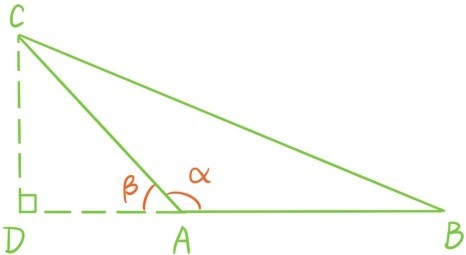
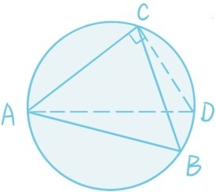
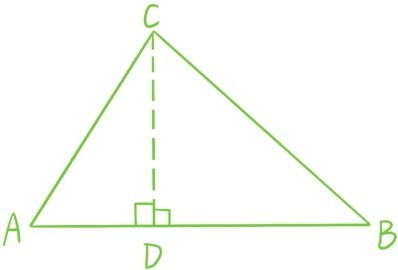

首先说明△ABC的一个内角∠A≥的情形下，正弦定理依然成立。在下图中，过点C作三角形的高，垂足为D。根据公式sin(π-θ)=sinθ，sinα=sinβ=，sinB=，所以仍然会有
同理也可以得到
因此，正弦定理对所有三角形都成立！

正弦定理告诉我们，在一个固定的△ABC中，任何边长和所对角的正弦比值都是相等的
这个量ω虽然是用边长和所对的角表达，但并不依赖于边的选取，不论取3条边中哪条边和所对的角计算边长和角正弦的比值，结果都是不变的，这种不变的量往往有几何意义。画出△ABC的外接圆，并过点A作直径AD，这时根据第四章定理5.4和定理5.5，。

所以这个不变的量ω正是三角形外接圆的直径，这也能解释为什么它是不变的。如果将三角形三边乘积除以2ω，会得到
注意ACsinA正是边AB的高，所以这个不变的量S正是三角形面积。

最后证明钝角的余弦定理，也是过点C作三角形的高，垂足为D。
根据公式cos(π-θ)=-cosθ，得
对两个直角三角形应用勾股定理得到
移项后利用平方差公式得到
BC2=AC2+(BD2-AD2)=AC2+AB(AB+2AD)
至此，完整地证明了余弦定理。
余弦定理：线段AB与线段AC的夹角为α，0≤α≤π，则
实际上我们是根据AB与AC的夹角为0，锐角，，钝角，π分为5种情况证明了余弦定理。但是这种分成5种情况的证明根本不符合数学的美学精神。另外，余弦定理在平面几何中占据着非常核心的地位，它可以直接推出勾股定理和它的逆定理：
在△ABC中，BC2=AC2+AB2当且仅当∠A是直角。
考虑到余弦定理是如此至关重要，自然想找到一个关于它的更深刻、更简洁的证明，所以有必要提出这样一个问题：
问题58：能否找到余弦定理的一种更简洁的证明？
如果认真观察余弦定理，你会发现等式中每一项都是两个线段长度和线段夹角余弦的乘积，比如AB2=AB·ABcos0°，这里0°正是线段AB与它自身的夹角！
另外，余弦定理和完全平方公式(a-b)2=a2-2ab+b2非常类似。完全平方公式为什么会成立呢？证明过程中无非就是用到加法交换律，加法结合律，乘法交换律，加法乘法分配律。
所有这些都启发我们定义“线段”的乘法使得AB和AC的“乘积”为AB·ACcosα，定义“线段”的加减法，使得AC-AB=BC，而且满足一些运算定律，最后用类似的完全平方公式直接推导出余弦定理。这正是下一章马上要做的事情！
提问时间
6.4.1 在△ABC中，已知AB=3，AC=5，∠A=120°，求BC和三角形面积。
6.4.2 利用余弦定理第三次证明平行四边形两条对角线的平方和等于4条边的平方和。
6.4.3 已知一个三角形的三边长分别为5，7，9，请判断它是锐角三角形，直角三角形，还是钝角三角形。